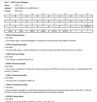

The basics of programming the ATSAM4S is similar to AVR and Xmega - you just set your bits in registers to setup the microcontroller's GPIO, UART, SPI, I2C, etc and then use C to tell it to do what you want. You will need to become familiar with bitwise operations like and (&) and or (|), as well as bit masks. Also sharpen up on your basic C - looping, conditions, functions, variable types and pointers. I will try to limit the use of pointers so that it makes things a bit more clear to beginners.
Here are some handy links:There are lots of registers on the SAM4S. For an example, there is a register called UART Control Register. Here is an example of a 32bit register:
The Bits marked by '-' do nothing, however the bits with labels do. When we set a bit (to 1) then we can control the way UART works.
If we want to enable the transmitter for the UART then we would write a 1 to the TXEN bit. We could do that in several ways.
I prefer the third example. You can read it like english and it makes sense. It's much easier when you go back to reading code and it's even better when troubleshooting using the debugger as you'll see later on. There is an example of how to find the predefined definitions for each peripheral in the first GPIO example. There are definitions for every register, bit, bit field and bit mask for every peripheral.
{kind=link}